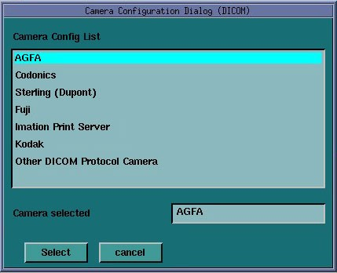

Illustration 4: DICOM Camera Model Dialog

Selection of a different camera model clears the Image Quality parameters, because these are camera manufacture dependant.
| NOTE: | It is advised to recheck the preset information with the camera manufacturer's representative. |